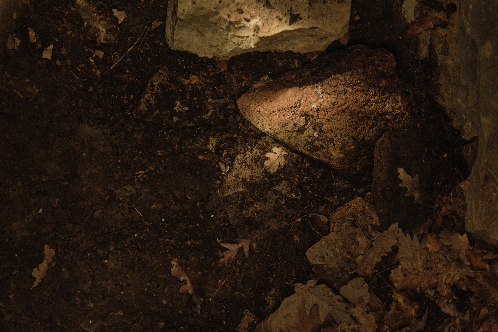
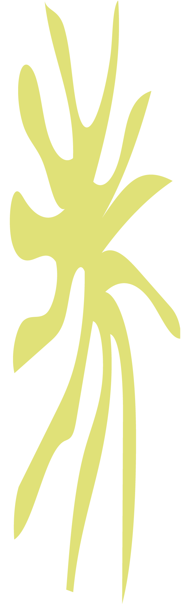
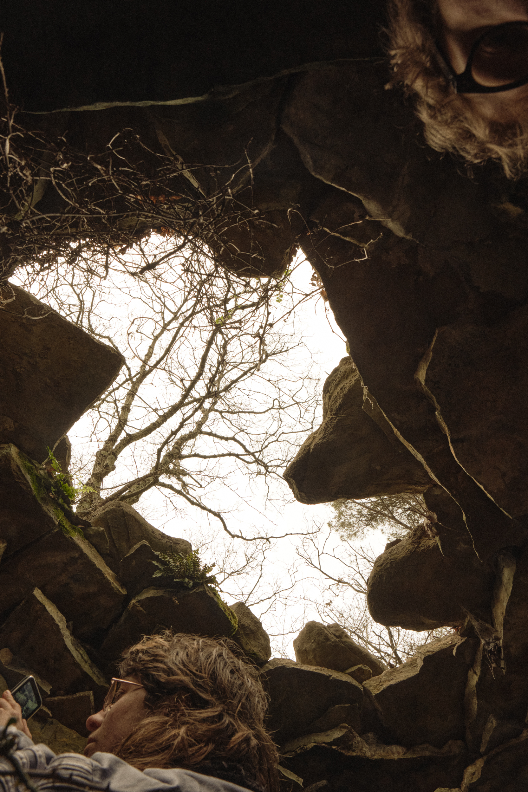
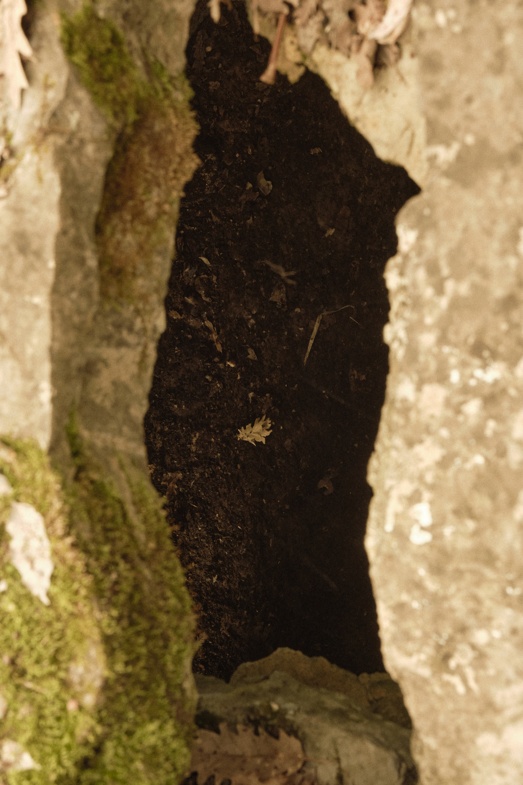

Rediscovering the layers of time and matter
Imagining the echoes of the past
In this edition of APUA we will descend into the Earth’s layers of matter to unearth traces of time, transformation, and existence. This expedition will lead us into our geological and archaeological past in search of stories that speak to our present and open new dialogues between science and art.
This edition builds on the previous one, Cavanei Cavanei, delving deeper into our past to uncover the stories buried beneath the ground we walk on.
This project will lead us to explore various geological and archeological sites, from the Necropolis of Caffaggio and the quarries of Carrara and Punta Bianca to the cave of Tenerrano.
We will meet with local archaeologists, palaeontologists and geologists to open dialogues between history, science, and art.
A Journey to the Center of the Earth will take place for a period of two weeks, from Friday the 13th to Sunday the 29th of March 2026. It will involve 8 artists with a shared affinity with the theme and will be organised in partnership with the Natural Park of Montemarcello and the municipality of Lerici. The project will conclude with an exhibition.


For more information on the upcoming project click here